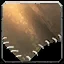
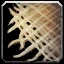
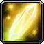
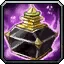
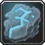
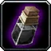
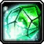
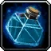

In brief
Blizzard announced over 600 new recipes without publishing a complete list. This page gathers the 401 Tailoring recipes recorded in the game files (client 1.60.1.70862, consulted on 12 November 2026). Names and required skills come from the game files. An acquisition marked “unknown” remains to be confirmed. Tables are grouped by required skill bracket. When acquisition, source or zone is not given in the data consulted, the cell says so. No drop rates are repeated; none were given.[1][2][4][3]
Key points
- 401 Tailoring recipes listed below, from the game files (client 1.60.1.70862, 12 November 2026); acquisition marked “unknown” remains to be confirmed.[4] Game data (client 1.60.1.70862)
- Acquisition given in the game files: trainer 91, drop 18, quest 5, reputation 39, unknown 248.[4] Game data (client 1.60.1.70862)
- Blizzard has not published the complete recipe list, nor trainers, vendors, prices or drop rates.[1][2]
- Reagents of 401 recipes and 113 materials linked to their “where to find it” card (game files).[5] Game data (client 1.60.1.70862)
How to read this list
This list is not official. Blizzard has not published the details of this profession’s recipes (vendors, trainers, monsters, zones, prices, drop rates). The names and skills below come from the game files (client 1.60.1.70862). An acquisition marked “unknown” remains to be confirmed. The French name is the in-game localization when one was found; otherwise the English name is used in both languages. “Trainer” also covers recipes listed as learned automatically with the profession. An overview page already online, Recipes and advanced blueprints (/en/professions/recipes-and-advanced-blueprints/), restates the official acquisition rules and the lootable recipes already shown by zone.[1][2][4][3]
Skill 1–75 — 71 recipes (game data)
| Recipe | Required skill | How obtained | Source | Zone | Status |
|---|---|---|---|---|---|
| Bolt of Linen Cloth | 1 | trainer | learned automatically with the profession | not recorded | game data |
| Brown Linen Shirt | 1 | trainer | learned automatically with the profession | not recorded | game data |
| Faction Banner | 1 | trainer | profession trainer (unnamed) | not recorded | game data |
| Linen Bag | 1 | trainer | learned automatically with the profession | not recorded | game data |
| Linen Cloak | 1 | trainer | learned automatically with the profession | not recorded | game data |
| Simple Linen Pants | 1 | trainer | learned automatically with the profession | not recorded | game data |
| White Linen Shirt | 1 | trainer | profession trainer (unnamed) | not recorded | game data |
| Linen Reagent Bag | 5 | unknown | not recorded | not recorded | game data — acquisition to be confirmed |
| Red Linen Robe | 25 | unknown | not recorded | not recorded | game data — acquisition to be confirmed |
| Blue Linen Vest | 35 | unknown | not recorded | not recorded | game data — acquisition to be confirmed |
| Red Linen Vest | 35 | unknown | not recorded | not recorded | game data — acquisition to be confirmed |
| Brown Linen Vest | 39 | trainer | profession trainer (unnamed) | not recorded | game data |
| Blue Linen Shirt | 41 | trainer | profession trainer (unnamed) | not recorded | game data |
| Brown Linen Pants | 41 | trainer | profession trainer (unnamed) | not recorded | game data |
| Brown Linen Robe | 41 | trainer | profession trainer (unnamed) | not recorded | game data |
| Heavy Linen Gloves | 41 | trainer | profession trainer (unnamed) | not recorded | game data |
| Linen Belt | 41 | trainer | profession trainer (unnamed) | not recorded | game data |
| Red Linen Shirt | 41 | trainer | profession trainer (unnamed) | not recorded | game data |
| Simple Dress | 41 | trainer | profession trainer (unnamed) | not recorded | game data |
| Simple Linen Boots | 41 | trainer | profession trainer (unnamed) | not recorded | game data |
| White Linen Robe | 41 | trainer | profession trainer (unnamed) | not recorded | game data |
| Blue Linen Robe | 45 | unknown | not recorded | not recorded | game data — acquisition to be confirmed |
| Azure Stormsewn Cord | 50 | reputation | Nightclaw Druids (Friendly) | not recorded | game data |
| Azure Stormsewn Cuffs | 50 | reputation | Nightclaw Druids (Friendly) | not recorded | game data |
| Cloudy Stormsewn Cord | 50 | reputation | Nightclaw Druids (Friendly) | not recorded | game data |
| Cloudy Stormsewn Cuffs | 50 | reputation | Nightclaw Druids (Friendly) | not recorded | game data |
| Novice Arcanist's Sash | 50 | unknown | not recorded | not recorded | game data — acquisition to be confirmed |
| Novice Ardent's Sash | 50 | unknown | not recorded | not recorded | game data — acquisition to be confirmed |
| Red Linen Bag | 50 | unknown | not recorded | not recorded | game data — acquisition to be confirmed |
| Green Linen Bracers | 51 | trainer | profession trainer (unnamed) | not recorded | game data |
| Reinforced Linen Cape | 51 | trainer | profession trainer (unnamed) | not recorded | game data |
| Azure Stormsewn Handwraps | 55 | reputation | Nightclaw Druids (Friendly) | not recorded | game data |
| Azure Stormsewn Shoes | 55 | reputation | Nightclaw Druids (Friendly) | not recorded | game data |
| Cloudy Stormsewn Handwraps | 55 | reputation | Nightclaw Druids (Friendly) | not recorded | game data |
| Cloudy Stormsewn Shoes | 55 | reputation | Nightclaw Druids (Friendly) | not recorded | game data |
| Barbaric Linen Vest | 56 | trainer | profession trainer (unnamed) | not recorded | game data |
| Green Linen Shirt | 56 | trainer | profession trainer (unnamed) | not recorded | game data |
| Linen Boots | 56 | trainer | profession trainer (unnamed) | not recorded | game data |
| Azure Stormsewn Leggings | 60 | reputation | Nightclaw Druids (Honored) | not recorded | game data |
| Azure Stormsewn Vest | 60 | reputation | Nightclaw Druids (Honored) | not recorded | game data |
| Cloudy Stormsewn Leggings | 60 | reputation | Nightclaw Druids (Honored) | not recorded | game data |
| Cloudy Stormsewn Vest | 60 | reputation | Nightclaw Druids (Honored) | not recorded | game data |
| Flame Boots | 60 | unknown | not recorded | not recorded | game data — acquisition to be confirmed |
| Pearly Boots | 60 | unknown | not recorded | not recorded | game data — acquisition to be confirmed |
| Pristine Boots | 60 | unknown | not recorded | not recorded | game data — acquisition to be confirmed |
| Shadow Boots | 60 | unknown | not recorded | not recorded | game data — acquisition to be confirmed |
| Shining Boots | 60 | unknown | not recorded | not recorded | game data — acquisition to be confirmed |
| Silky Boots | 60 | unknown | not recorded | not recorded | game data — acquisition to be confirmed |
| Handstitched Linen Britches | 61 | trainer | profession trainer (unnamed) | not recorded | game data |
| Bolt of Woolen Cloth | 65 | trainer | profession trainer (unnamed) | not recorded | game data |
| Simple Kilt | 66 | trainer | profession trainer (unnamed) | not recorded | game data |
| Woolen Bag | 66 | trainer | profession trainer (unnamed) | not recorded | game data |
| Colorful Kilt | 70 | unknown | not recorded | not recorded | game data — acquisition to be confirmed |
| Woolen Reagent Bag | 70 | unknown | not recorded | not recorded | game data — acquisition to be confirmed |
| Soft-soled Linen Boots | 71 | trainer | profession trainer (unnamed) | not recorded | game data |
| Woolen Cape | 71 | trainer | profession trainer (unnamed) | not recorded | game data |
| Blue Overalls | 75 | unknown | not recorded | not recorded | game data — acquisition to be confirmed |
| Filigreed Flame Gown | 75 | drop | Jergosh the Invoker ; Rhahk'Zor ; Gilnid ; Fel Steed / Shadow Charger | Ragefire Chasm ; Shadowfang Keep ; The Deadmines | game data |
| Filigreed Pearly Gown | 75 | drop | Bazzalan ; Cookie ; Fel Steed / Shadow Charger | Ragefire Chasm ; Shadowfang Keep ; The Deadmines | game data |
| Filigreed Pristine Gown | 75 | drop | Sneed ; Fel Steed / Shadow Charger | Shadowfang Keep ; The Deadmines | game data |
| Filigreed Shadow Gown | 75 | drop | Bazzalan ; Fel Steed / Shadow Charger | Ragefire Chasm ; Shadowfang Keep | game data |
| Filigreed Shining Gown | 75 | drop | Cookie ; Fel Steed / Shadow Charger | Shadowfang Keep ; The Deadmines | game data |
| Filigreed Silky Gown | 75 | drop | Gilnid ; Fel Steed / Shadow Charger | Shadowfang Keep ; The Deadmines | game data |
| Flame Gloves | 75 | unknown | not recorded | not recorded | game data — acquisition to be confirmed |
| Green Woolen Bag | 75 | unknown | not recorded | not recorded | game data — acquisition to be confirmed |
| Pearly Gloves | 75 | unknown | not recorded | not recorded | game data — acquisition to be confirmed |
| Pristine Gloves | 75 | unknown | not recorded | not recorded | game data — acquisition to be confirmed |
| Red Woolen Boots | 75 | unknown | not recorded | not recorded | game data — acquisition to be confirmed |
| Shadow Gloves | 75 | unknown | not recorded | not recorded | game data — acquisition to be confirmed |
| Shining Gloves | 75 | unknown | not recorded | not recorded | game data — acquisition to be confirmed |
| Silky Gloves | 75 | unknown | not recorded | not recorded | game data — acquisition to be confirmed |
Skill 76–150 — 99 recipes (game data)
| Recipe | Required skill | How obtained | Source | Zone | Status |
|---|---|---|---|---|---|
| Green Woolen Vest | 76 | trainer | profession trainer (unnamed) | not recorded | game data |
| Heavy Woolen Gloves | 76 | trainer | profession trainer (unnamed) | not recorded | game data |
| Gray Woolen Robe | 80 | unknown | not recorded | not recorded | game data — acquisition to be confirmed |
| Heavy Woolen Cloak | 80 | unknown | not recorded | not recorded | game data — acquisition to be confirmed |
| Green Woolen Robe | 81 | trainer | profession trainer (unnamed) | not recorded | game data |
| Flame Sash | 85 | unknown | not recorded | not recorded | game data — acquisition to be confirmed |
| Gray Woolen Shirt | 85 | trainer | profession trainer (unnamed) | not recorded | game data |
| Pearly Sash | 85 | unknown | not recorded | not recorded | game data — acquisition to be confirmed |
| Pristine Sash | 85 | unknown | not recorded | not recorded | game data — acquisition to be confirmed |
| Shadow Sash | 85 | unknown | not recorded | not recorded | game data — acquisition to be confirmed |
| Shining Sash | 85 | unknown | not recorded | not recorded | game data — acquisition to be confirmed |
| Silky Sash | 85 | unknown | not recorded | not recorded | game data — acquisition to be confirmed |
| Pearl-clasped Cloak | 86 | trainer | profession trainer (unnamed) | not recorded | game data |
| Woolen Boots | 86 | trainer | profession trainer (unnamed) | not recorded | game data |
| Greater Adept's Robe | 90 | unknown | not recorded | not recorded | game data — acquisition to be confirmed |
| Red Woolen Bag | 90 | unknown | not recorded | not recorded | game data — acquisition to be confirmed |
| Reinforced Woolen Shoulders | 95 | unknown | not recorded | not recorded | game data — acquisition to be confirmed |
| Stylish Blue Shirt | 95 | unknown | not recorded | not recorded | game data — acquisition to be confirmed |
| Stylish Green Shirt | 95 | unknown | not recorded | not recorded | game data — acquisition to be confirmed |
| Filigreed Flame Leggings | 100 | drop | Ghamoo-ra ; Targorr the Dread | Blackfathom Deeps ; The Stockade | game data |
| Filigreed Pearly Leggings | 100 | drop | Fel Steed / Shadow Charger | Shadowfang Keep | game data |
| Filigreed Pristine Leggings | 100 | drop | Edwin VanCleef | The Deadmines | game data |
| Filigreed Shadow Leggings | 100 | drop | Lady Sarevess | Blackfathom Deeps | game data |
| Filigreed Shining Leggings | 100 | drop | Edwin VanCleef ; Fel Steed / Shadow Charger | Shadowfang Keep ; The Deadmines | game data |
| Filigreed Silky Leggings | 100 | drop | Fel Steed / Shadow Charger ; Ghamoo-ra | Blackfathom Deeps ; Shadowfang Keep | game data |
| Flame Circlet | 100 | unknown | not recorded | not recorded | game data — acquisition to be confirmed |
| Pearly Circlet | 100 | unknown | not recorded | not recorded | game data — acquisition to be confirmed |
| Phoenix Gloves | 100 | unknown | not recorded | not recorded | game data — acquisition to be confirmed |
| Phoenix Pants | 100 | unknown | not recorded | not recorded | game data — acquisition to be confirmed |
| Pristine Circlet | 100 | unknown | not recorded | not recorded | game data — acquisition to be confirmed |
| Shadow Circlet | 100 | unknown | not recorded | not recorded | game data — acquisition to be confirmed |
| Shining Circlet | 100 | unknown | not recorded | not recorded | game data — acquisition to be confirmed |
| Silky Circlet | 100 | unknown | not recorded | not recorded | game data — acquisition to be confirmed |
| Double-stitched Woolen Shoulders | 101 | trainer | profession trainer (unnamed) | not recorded | game data |
| Heavy Woolen Pants | 101 | trainer | profession trainer (unnamed) | not recorded | game data |
| Stylish Red Shirt | 101 | trainer | profession trainer (unnamed) | not recorded | game data |
| White Woolen Dress | 101 | trainer | profession trainer (unnamed) | not recorded | game data |
| Bolt of Silk Cloth | 105 | trainer | profession trainer (unnamed) | not recorded | game data |
| Bright Yellow Shirt | 110 | unknown | not recorded | not recorded | game data — acquisition to be confirmed |
| Flame Gown | 110 | unknown | not recorded | not recorded | game data — acquisition to be confirmed |
| Pearly Gown | 110 | unknown | not recorded | not recorded | game data — acquisition to be confirmed |
| Pristine Gown | 110 | unknown | not recorded | not recorded | game data — acquisition to be confirmed |
| Shadow Gown | 110 | unknown | not recorded | not recorded | game data — acquisition to be confirmed |
| Shining Gown | 110 | unknown | not recorded | not recorded | game data — acquisition to be confirmed |
| Silky Gown | 110 | unknown | not recorded | not recorded | game data — acquisition to be confirmed |
| Spider Silk Slippers | 115 | unknown | not recorded | not recorded | game data — acquisition to be confirmed |
| Spidersilk Boots | 116 | trainer | profession trainer (unnamed) | not recorded | game data |
| Gloves of Meditation | 117 | trainer | profession trainer (unnamed) | not recorded | game data |
| Azure Silk Gloves | 120 | unknown | not recorded | not recorded | game data — acquisition to be confirmed |
| Dark Silk Shirt | 120 | unknown | not recorded | not recorded | game data — acquisition to be confirmed |
| Hands of Darkness | 120 | unknown | not recorded | not recorded | game data — acquisition to be confirmed |
| Lesser Wizard's Robe | 122 | trainer | profession trainer (unnamed) | not recorded | game data |
| Azure Silk Hood | 125 | trainer | profession trainer (unnamed) | not recorded | game data |
| Filigreed Flame Circlet | 125 | drop | Gelihast ; Baron Aquanis ; Aku'mai | Blackfathom Deeps | game data |
| Filigreed Pearly Circlet | 125 | drop | Aku'mai | Blackfathom Deeps | game data |
| Filigreed Pristine Circlet | 125 | drop | Bazil Thredd | The Stockade | game data |
| Filigreed Shadow Circlet | 125 | drop | Lorgus Jett ; Old Serra'kis ; Twilight Lord Kelris | Blackfathom Deeps | game data |
| Filigreed Shining Circlet | 125 | drop | Bazil Thredd | The Stockade | game data |
| Filigreed Silky Circlet | 125 | drop | Gelihast ; Lorgus Jett ; Old Serra'kis | Blackfathom Deeps | game data |
| Flame Leggings | 125 | unknown | not recorded | not recorded | game data — acquisition to be confirmed |
| Pearly Leggings | 125 | unknown | not recorded | not recorded | game data — acquisition to be confirmed |
| Pristine Leggings | 125 | unknown | not recorded | not recorded | game data — acquisition to be confirmed |
| Robes of Arcana | 125 | unknown | not recorded | not recorded | game data — acquisition to be confirmed |
| Shadow Leggings | 125 | unknown | not recorded | not recorded | game data — acquisition to be confirmed |
| Shining Leggings | 125 | unknown | not recorded | not recorded | game data — acquisition to be confirmed |
| Silk Reagent Bag | 125 | quest | I Need a Tailor | not recorded | game data |
| Silky Leggings | 125 | unknown | not recorded | not recorded | game data — acquisition to be confirmed |
| Truefaith Gloves | 125 | unknown | not recorded | not recorded | game data — acquisition to be confirmed |
| Azure Silk Pants | 127 | trainer | profession trainer (unnamed) | not recorded | game data |
| Boots of Darkness | 127 | trainer | profession trainer (unnamed) | not recorded | game data |
| Enchanter's Cowl | 130 | unknown | not recorded | not recorded | game data — acquisition to be confirmed |
| Green Silk Armor | 130 | unknown | not recorded | not recorded | game data — acquisition to be confirmed |
| Silk Headband | 130 | trainer | profession trainer (unnamed) | not recorded | game data |
| White Swashbuckler's Shirt | 130 | trainer | profession trainer (unnamed) | not recorded | game data |
| Shadow Hood | 135 | unknown | not recorded | not recorded | game data — acquisition to be confirmed |
| Azure Silk Vest | 137 | trainer | profession trainer (unnamed) | not recorded | game data |
| Small Silk Pack | 137 | trainer | profession trainer (unnamed) | not recorded | game data |
| Azure Silk Cloak | 140 | unknown | not recorded | not recorded | game data — acquisition to be confirmed |
| Black Slippers | 140 | unknown | not recorded | not recorded | game data — acquisition to be confirmed |
| Bolt of Mageweave | 140 | trainer | profession trainer (unnamed) | not recorded | game data |
| Boots of the Enchanter | 140 | unknown | not recorded | not recorded | game data — acquisition to be confirmed |
| Earthen Leggings | 140 | unknown | not recorded | not recorded | game data — acquisition to be confirmed |
| Fiery Slippers | 140 | unknown | not recorded | not recorded | game data — acquisition to be confirmed |
| Formal White Shirt | 140 | trainer | profession trainer (unnamed) | not recorded | game data |
| Frothing Slippers | 140 | unknown | not recorded | not recorded | game data — acquisition to be confirmed |
| Green Silk Pack | 140 | unknown | not recorded | not recorded | game data — acquisition to be confirmed |
| Radiant Slippers | 140 | unknown | not recorded | not recorded | game data — acquisition to be confirmed |
| Spinning Wheel | 140 | unknown | not recorded | not recorded | game data — acquisition to be confirmed |
| Tuxedo Jacket | 140 | unknown | not recorded | not recorded | game data — acquisition to be confirmed |
| Tuxedo Pants | 140 | unknown | not recorded | not recorded | game data — acquisition to be confirmed |
| White Wedding Dress | 140 | unknown | not recorded | not recorded | game data — acquisition to be confirmed |
| Crimson Silk Cloak | 145 | unknown | not recorded | not recorded | game data — acquisition to be confirmed |
| Earthen Silk Slippers | 145 | unknown | not recorded | not recorded | game data — acquisition to be confirmed |
| Red Swashbuckler's Shirt | 145 | trainer | profession trainer (unnamed) | not recorded | game data |
| Spider Belt | 145 | unknown | not recorded | not recorded | game data — acquisition to be confirmed |
| Earthen Vest | 147 | trainer | profession trainer (unnamed) | not recorded | game data |
| Black Silk Pack | 150 | unknown | not recorded | not recorded | game data — acquisition to be confirmed |
| Earthen Silk Hood | 150 | unknown | not recorded | not recorded | game data — acquisition to be confirmed |
| Rich Purple Silk Shirt | 150 | unknown | not recorded | not recorded | game data — acquisition to be confirmed |
Skill 151–225 — 112 recipes (game data)
| Recipe | Required skill | How obtained | Source | Zone | Status |
|---|---|---|---|---|---|
| Azure Silk Belt | 152 | trainer | profession trainer (unnamed) | not recorded | game data |
| Crimson Silk Belt | 152 | trainer | profession trainer (unnamed) | not recorded | game data |
| Azure Shoulders | 155 | unknown | not recorded | not recorded | game data — acquisition to be confirmed |
| Crimson Silk Shoulders | 155 | unknown | not recorded | not recorded | game data — acquisition to be confirmed |
| Green Holiday Shirt | 155 | unknown | not recorded | not recorded | game data — acquisition to be confirmed |
| Green Silken Shoulders | 157 | trainer | profession trainer (unnamed) | not recorded | game data |
| Earthen Silk Belt | 160 | unknown | not recorded | not recorded | game data — acquisition to be confirmed |
| Earthen Silk Gloves | 160 | unknown | not recorded | not recorded | game data — acquisition to be confirmed |
| Long Silken Cloak | 162 | trainer | profession trainer (unnamed) | not recorded | game data |
| Black Handwraps | 165 | unknown | not recorded | not recorded | game data — acquisition to be confirmed |
| Black Swashbuckler's Shirt | 165 | unknown | not recorded | not recorded | game data — acquisition to be confirmed |
| Crimson Silk Vest | 165 | trainer | profession trainer (unnamed) | not recorded | game data |
| Earthen Silk Cuffs | 165 | unknown | not recorded | not recorded | game data — acquisition to be confirmed |
| Fiery Handwraps | 165 | unknown | not recorded | not recorded | game data — acquisition to be confirmed |
| Frothing Handwraps | 165 | unknown | not recorded | not recorded | game data — acquisition to be confirmed |
| Icy Cloak | 165 | unknown | not recorded | not recorded | game data — acquisition to be confirmed |
| Radiant Handwraps | 165 | unknown | not recorded | not recorded | game data — acquisition to be confirmed |
| Star Belt | 165 | unknown | not recorded | not recorded | game data — acquisition to be confirmed |
| Robe of Power | 167 | trainer | profession trainer (unnamed) | not recorded | game data |
| Crimson Silk Robe | 170 | unknown | not recorded | not recorded | game data — acquisition to be confirmed |
| Earthen Silk Shoulders | 170 | unknown | not recorded | not recorded | game data — acquisition to be confirmed |
| Azure Stormsewn Cowl | 175 | reputation | Kirin Tor (Friendly) | not recorded | game data |
| Azure Stormsewn Epaulets | 175 | reputation | Kirin Tor (Friendly) | not recorded | game data |
| Cloudy Stormsewn Cowl | 175 | reputation | Earthen Ring (Friendly) | not recorded | game data |
| Cloudy Stormsewn Epaulets | 175 | reputation | Earthen Ring (Friendly) | not recorded | game data |
| Crimson Silk Pantaloons | 175 | trainer | profession trainer (unnamed) | not recorded | game data |
| Black Mageweave Leggings | 177 | trainer | profession trainer (unnamed) | not recorded | game data |
| Black Mageweave Vest | 177 | trainer | profession trainer (unnamed) | not recorded | game data |
| Orange Mageweave Shirt | 180 | trainer | profession trainer (unnamed) | not recorded | game data |
| Red Mageweave Pants | 180 | unknown | not recorded | not recorded | game data — acquisition to be confirmed |
| Red Mageweave Vest | 180 | unknown | not recorded | not recorded | game data — acquisition to be confirmed |
| White Bandit Mask | 180 | unknown | not recorded | not recorded | game data — acquisition to be confirmed |
| Black Mageweave Robe | 182 | trainer | profession trainer (unnamed) | not recorded | game data |
| Crimson Silk Gloves | 182 | trainer | profession trainer (unnamed) | not recorded | game data |
| Shadoweave Pants | 182 | trainer | profession trainer (unnamed) | not recorded | game data |
| Orange Martial Shirt | 185 | unknown | not recorded | not recorded | game data — acquisition to be confirmed |
| Stormcloth Gloves | 185 | quest | I Need a Tailor | not recorded | game data |
| Stormcloth Pants | 185 | unknown | not recorded | not recorded | game data — acquisition to be confirmed |
| Black Mageweave Gloves | 187 | trainer | profession trainer (unnamed) | not recorded | game data |
| Shadoweave Robe | 187 | trainer | profession trainer (unnamed) | not recorded | game data |
| Black Cord | 190 | unknown | not recorded | not recorded | game data — acquisition to be confirmed |
| Enchanted Mageweave Pouch | 190 | unknown | not recorded | not recorded | game data — acquisition to be confirmed |
| Fiery Cord | 190 | unknown | not recorded | not recorded | game data — acquisition to be confirmed |
| Frothing Cord | 190 | unknown | not recorded | not recorded | game data — acquisition to be confirmed |
| Lavender Mageweave Shirt | 190 | unknown | not recorded | not recorded | game data — acquisition to be confirmed |
| Mageweave Reagent Bag | 190 | unknown | not recorded | not recorded | game data — acquisition to be confirmed |
| Radiant Cord | 190 | unknown | not recorded | not recorded | game data — acquisition to be confirmed |
| Red Mageweave Gloves | 190 | unknown | not recorded | not recorded | game data — acquisition to be confirmed |
| Stormcloth Vest | 190 | unknown | not recorded | not recorded | game data — acquisition to be confirmed |
| Netherflame Shoulders | 195 | unknown | not recorded | not recorded | game data — acquisition to be confirmed |
| Netherfroth Shoulders | 195 | unknown | not recorded | not recorded | game data — acquisition to be confirmed |
| Nethergeld Shoulders | 195 | unknown | not recorded | not recorded | game data — acquisition to be confirmed |
| Netherlight Shoulders | 195 | unknown | not recorded | not recorded | game data — acquisition to be confirmed |
| Netherpearl Shoulders | 195 | unknown | not recorded | not recorded | game data — acquisition to be confirmed |
| Nethershine Shoulders | 195 | unknown | not recorded | not recorded | game data — acquisition to be confirmed |
| Pink Mageweave Shirt | 195 | unknown | not recorded | not recorded | game data — acquisition to be confirmed |
| Red Mageweave Shoulders | 195 | unknown | not recorded | not recorded | game data — acquisition to be confirmed |
| Simple Black Dress | 195 | trainer | profession trainer (unnamed) | not recorded | game data |
| Black Mageweave Boots | 197 | trainer | profession trainer (unnamed) | not recorded | game data |
| Black Mageweave Headband | 197 | trainer | profession trainer (unnamed) | not recorded | game data |
| Black Mageweave Shoulders | 197 | trainer | profession trainer (unnamed) | not recorded | game data |
| Cindercloth Robe | 197 | trainer | profession trainer (unnamed) | not recorded | game data |
| Dreamweave Gloves | 197 | trainer | profession trainer (unnamed) | not recorded | game data |
| Dreamweave Vest | 197 | trainer | profession trainer (unnamed) | not recorded | game data |
| Mageweave Bag | 197 | trainer | profession trainer (unnamed) | not recorded | game data |
| Shadoweave Gloves | 197 | trainer | profession trainer (unnamed) | not recorded | game data |
| Admiral's Hat | 200 | unknown | not recorded | not recorded | game data — acquisition to be confirmed |
| Red Mageweave Headband | 200 | unknown | not recorded | not recorded | game data — acquisition to be confirmed |
| Shadoweave Mask | 200 | quest | The Undermarket | not recorded | game data |
| Stormcloth Headband | 200 | unknown | not recorded | not recorded | game data — acquisition to be confirmed |
| Stormcloth Shoulders | 200 | unknown | not recorded | not recorded | game data — acquisition to be confirmed |
| Tuxedo Shirt | 200 | unknown | not recorded | not recorded | game data — acquisition to be confirmed |
| Red Mageweave Bag | 202 | trainer | profession trainer (unnamed) | not recorded | game data |
| Shadoweave Shoulders | 202 | trainer | profession trainer (unnamed) | not recorded | game data |
| Bolt of Runecloth | 205 | trainer | profession trainer (unnamed) | not recorded | game data |
| Festival Dress | 205 | quest | Festive Recipes | not recorded | game data |
| Festival Suit | 205 | quest | Festive Recipes | not recorded | game data |
| Netherflame Cuffs | 205 | unknown | not recorded | not recorded | game data — acquisition to be confirmed |
| Netherfroth Cuffs | 205 | unknown | not recorded | not recorded | game data — acquisition to be confirmed |
| Nethergeld Cuffs | 205 | unknown | not recorded | not recorded | game data — acquisition to be confirmed |
| Netherlight Cuffs | 205 | unknown | not recorded | not recorded | game data — acquisition to be confirmed |
| Netherpearl Cuffs | 205 | unknown | not recorded | not recorded | game data — acquisition to be confirmed |
| Nethershine Cuffs | 205 | unknown | not recorded | not recorded | game data — acquisition to be confirmed |
| Stormcloth Boots | 205 | unknown | not recorded | not recorded | game data — acquisition to be confirmed |
| Cindercloth Boots | 207 | trainer | profession trainer (unnamed) | not recorded | game data |
| Shadoweave Boots | 207 | trainer | profession trainer (unnamed) | not recorded | game data |
| Frostweave Robe | 210 | unknown | not recorded | not recorded | game data — acquisition to be confirmed |
| Frostweave Tunic | 210 | unknown | not recorded | not recorded | game data — acquisition to be confirmed |
| Dreamweave Circlet | 212 | trainer | profession trainer (unnamed) | not recorded | game data |
| Black Waistcord | 215 | unknown | not recorded | not recorded | game data — acquisition to be confirmed |
| Cindercloth Vest | 215 | unknown | not recorded | not recorded | game data — acquisition to be confirmed |
| Earthenweave Cord | 215 | unknown | not recorded | not recorded | game data — acquisition to be confirmed |
| Earthenweave Gloves | 215 | unknown | not recorded | not recorded | game data — acquisition to be confirmed |
| Fiery Waistcord | 215 | unknown | not recorded | not recorded | game data — acquisition to be confirmed |
| Frostweave Gloves | 215 | unknown | not recorded | not recorded | game data — acquisition to be confirmed |
| Frothing Waistcord | 215 | unknown | not recorded | not recorded | game data — acquisition to be confirmed |
| Ghostweave Cord | 215 | unknown | not recorded | not recorded | game data — acquisition to be confirmed |
| Radiant Waistcord | 215 | unknown | not recorded | not recorded | game data — acquisition to be confirmed |
| Runecloth Bag | 215 | unknown | not recorded | not recorded | game data — acquisition to be confirmed |
| Runecloth Reagent Bag | 215 | unknown | not recorded | not recorded | game data — acquisition to be confirmed |
| Runecloth Robe | 215 | unknown | not recorded | not recorded | game data — acquisition to be confirmed |
| Runecloth Tunic | 215 | unknown | not recorded | not recorded | game data — acquisition to be confirmed |
| Soul Pouch | 215 | unknown | not recorded | not recorded | game data — acquisition to be confirmed |
| Runecloth Belt | 217 | trainer | profession trainer (unnamed) | not recorded | game data |
| Ghostweave Belt | 220 | unknown | not recorded | not recorded | game data — acquisition to be confirmed |
| Runecloth Cloak | 220 | unknown | not recorded | not recorded | game data — acquisition to be confirmed |
| Brightcloth Gloves | 225 | unknown | not recorded | not recorded | game data — acquisition to be confirmed |
| Brightcloth Robe | 225 | unknown | not recorded | not recorded | game data — acquisition to be confirmed |
| Cindercloth Gloves | 225 | unknown | not recorded | not recorded | game data — acquisition to be confirmed |
| Earthenweave Boots | 225 | unknown | not recorded | not recorded | game data — acquisition to be confirmed |
| Ghostweave Gloves | 225 | unknown | not recorded | not recorded | game data — acquisition to be confirmed |
| Ghostweave Vest | 225 | unknown | not recorded | not recorded | game data — acquisition to be confirmed |
Skill 226–300 — 119 recipes (game data)
| Recipe | Required skill | How obtained | Source | Zone | Status |
|---|---|---|---|---|---|
| Brightcloth Cloak | 230 | unknown | not recorded | not recorded | game data — acquisition to be confirmed |
| Cenarion Herb Bag | 230 | reputation | Cenarion Circle (Friendly) | not recorded | game data |
| Cindercloth Cloak | 230 | unknown | not recorded | not recorded | game data — acquisition to be confirmed |
| Enchanted Runecloth Bag | 230 | unknown | not recorded | not recorded | game data — acquisition to be confirmed |
| Felcloth Pants | 230 | unknown | not recorded | not recorded | game data — acquisition to be confirmed |
| Mooncloth | 230 | unknown | not recorded | not recorded | game data — acquisition to be confirmed |
| Runecloth Gloves | 230 | unknown | not recorded | not recorded | game data — acquisition to be confirmed |
| Wizardweave Leggings | 230 | unknown | not recorded | not recorded | game data — acquisition to be confirmed |
| Black Gloves | 235 | unknown | not recorded | not recorded | game data — acquisition to be confirmed |
| Black Sandals | 235 | unknown | not recorded | not recorded | game data — acquisition to be confirmed |
| Cindercloth Pants | 235 | unknown | not recorded | not recorded | game data — acquisition to be confirmed |
| Cloak of Fire | 235 | unknown | not recorded | not recorded | game data — acquisition to be confirmed |
| Fiery Gloves | 235 | unknown | not recorded | not recorded | game data — acquisition to be confirmed |
| Fiery Sandals | 235 | unknown | not recorded | not recorded | game data — acquisition to be confirmed |
| Frostweave Pants | 235 | unknown | not recorded | not recorded | game data — acquisition to be confirmed |
| Frothing Gloves | 235 | unknown | not recorded | not recorded | game data — acquisition to be confirmed |
| Frothing Sandals | 235 | unknown | not recorded | not recorded | game data — acquisition to be confirmed |
| Radiant Gloves | 235 | unknown | not recorded | not recorded | game data — acquisition to be confirmed |
| Radiant Sandals | 235 | unknown | not recorded | not recorded | game data — acquisition to be confirmed |
| Runecloth Boots | 235 | unknown | not recorded | not recorded | game data — acquisition to be confirmed |
| Earthenweave Mantle | 240 | unknown | not recorded | not recorded | game data — acquisition to be confirmed |
| Felcloth Boots | 240 | unknown | not recorded | not recorded | game data — acquisition to be confirmed |
| Runecloth Pants | 240 | unknown | not recorded | not recorded | game data — acquisition to be confirmed |
| Brightcloth Pants | 245 | unknown | not recorded | not recorded | game data — acquisition to be confirmed |
| Earthenweave Leggings | 245 | unknown | not recorded | not recorded | game data — acquisition to be confirmed |
| Felcloth Hood | 245 | unknown | not recorded | not recorded | game data — acquisition to be confirmed |
| Ghostweave Pants | 245 | unknown | not recorded | not recorded | game data — acquisition to be confirmed |
| Mooncloth Leggings | 245 | unknown | not recorded | not recorded | game data — acquisition to be confirmed |
| Robe of Winter Night | 245 | unknown | not recorded | not recorded | game data — acquisition to be confirmed |
| Earthenweave Vest | 250 | unknown | not recorded | not recorded | game data — acquisition to be confirmed |
| Ghostweave Mantle | 250 | unknown | not recorded | not recorded | game data — acquisition to be confirmed |
| Green Winter Clothes | 250 | unknown | not recorded | not recorded | game data — acquisition to be confirmed |
| Red Winter Clothes | 250 | unknown | not recorded | not recorded | game data — acquisition to be confirmed |
| Runecloth Cuffs | 250 | unknown | not recorded | not recorded | game data — acquisition to be confirmed |
| Runecloth Headband | 250 | unknown | not recorded | not recorded | game data — acquisition to be confirmed |
| Felcloth Bag | 252 | trainer | profession trainer (unnamed) | not recorded | game data |
| Argent Boots | 255 | reputation | Argent Dawn (Honored) | not recorded | game data |
| Big Bag of Enchantment | 255 | unknown | not recorded | not recorded | game data — acquisition to be confirmed |
| Earthenweave Cuffs | 255 | unknown | not recorded | not recorded | game data — acquisition to be confirmed |
| Ghostweave Boots | 255 | unknown | not recorded | not recorded | game data — acquisition to be confirmed |
| Mooncloth Bag | 255 | unknown | not recorded | not recorded | game data — acquisition to be confirmed |
| Mooncloth Reagent Bag | 255 | unknown | not recorded | not recorded | game data — acquisition to be confirmed |
| Satchel of Cenarius | 255 | reputation | Cenarion Circle (Revered) | not recorded | game data |
| Wisdom of the Timbermaw | 255 | reputation | Timbermaw Hold (Honored) | not recorded | game data |
| Wizardweave Robe | 255 | unknown | not recorded | not recorded | game data — acquisition to be confirmed |
| Earthenweave Crown | 260 | unknown | not recorded | not recorded | game data — acquisition to be confirmed |
| Felcloth Robe | 260 | unknown | not recorded | not recorded | game data — acquisition to be confirmed |
| Ghostweave Hood | 260 | unknown | not recorded | not recorded | game data — acquisition to be confirmed |
| Runecloth Shoulders | 260 | unknown | not recorded | not recorded | game data — acquisition to be confirmed |
| Wizardweave Turban | 260 | unknown | not recorded | not recorded | game data — acquisition to be confirmed |
| Felcloth Shoulders | 265 | unknown | not recorded | not recorded | game data — acquisition to be confirmed |
| Mooncloth Vest | 270 | unknown | not recorded | not recorded | game data — acquisition to be confirmed |
| Mooncloth Robe | 275 | unknown | not recorded | not recorded | game data — acquisition to be confirmed |
| Mooncloth Shoulders | 275 | unknown | not recorded | not recorded | game data — acquisition to be confirmed |
| Mooncloth Boots | 277 | trainer | profession trainer (unnamed) | not recorded | game data |
| Cloak of Warding | 280 | unknown | not recorded | not recorded | game data — acquisition to be confirmed |
| Felcloth Gloves | 280 | unknown | not recorded | not recorded | game data — acquisition to be confirmed |
| Gordok Ogre Suit | 280 | trainer | profession trainer (unnamed) | not recorded | game data |
| Inferno Gloves | 280 | unknown | not recorded | not recorded | game data — acquisition to be confirmed |
| Mooncloth Circlet | 280 | unknown | not recorded | not recorded | game data — acquisition to be confirmed |
| Mooncloth Gloves | 280 | unknown | not recorded | not recorded | game data — acquisition to be confirmed |
| Runed Stygian Belt | 285 | unknown | not recorded | not recorded | game data — acquisition to be confirmed |
| Runed Stygian Boots | 285 | unknown | not recorded | not recorded | game data — acquisition to be confirmed |
| Runed Stygian Leggings | 285 | unknown | not recorded | not recorded | game data — acquisition to be confirmed |
| Swarmtender's Gloves | 285 | reputation | Cenarion Circle (Friendly) | not recorded | game data |
| Venomspew Gloves | 285 | reputation | Cenarion Circle (Friendly) | not recorded | game data |
| Argent Shoulders | 290 | reputation | Argent Dawn (Revered) | not recorded | game data |
| Mantle of the Timbermaw | 290 | reputation | Timbermaw Hold (Revered) | not recorded | game data |
| Swarmtender's Cord | 290 | reputation | Cenarion Circle (Honored) | not recorded | game data |
| Venomspew Cord | 290 | reputation | Cenarion Circle (Honored) | not recorded | game data |
| Belt of the Archmage | 295 | unknown | not recorded | not recorded | game data — acquisition to be confirmed |
| Gloves of Spell Mastery | 295 | unknown | not recorded | not recorded | game data — acquisition to be confirmed |
| Robe of the Archmage | 295 | unknown | not recorded | not recorded | game data — acquisition to be confirmed |
| Robe of the Void | 295 | unknown | not recorded | not recorded | game data — acquisition to be confirmed |
| Swarmtender's Footpads | 295 | reputation | Cenarion Circle (Honored) | not recorded | game data |
| Truefaith Vestments | 295 | unknown | not recorded | not recorded | game data — acquisition to be confirmed |
| Venomspew Footpads | 295 | reputation | Cenarion Circle (Honored) | not recorded | game data |
| Bloodvine Boots | 300 | reputation | Zandalar Tribe (Friendly) | not recorded | game data |
| Bloodvine Leggings | 300 | reputation | Zandalar Tribe (Honored) | not recorded | game data |
| Bloodvine Vest | 300 | reputation | Zandalar Tribe (Revered) | not recorded | game data |
| Boots of Conviction | 300 | unknown | not recorded | not recorded | game data — acquisition to be confirmed |
| Bottomless Bag | 300 | unknown | not recorded | not recorded | game data — acquisition to be confirmed |
| Bottomless Reagent Bag | 300 | unknown | not recorded | not recorded | game data — acquisition to be confirmed |
| Cloak of Earth and Sky | 300 | unknown | not recorded | not recorded | game data — acquisition to be confirmed |
| Core Felcloth Bag | 300 | unknown | not recorded | not recorded | game data — acquisition to be confirmed |
| Demonheart Boots | 300 | unknown | not recorded | not recorded | game data — acquisition to be confirmed |
| Demonheart Gloves | 300 | unknown | not recorded | not recorded | game data — acquisition to be confirmed |
| Demonheart Leggings | 300 | unknown | not recorded | not recorded | game data — acquisition to be confirmed |
| Demonheart Spaulders | 300 | unknown | not recorded | not recorded | game data — acquisition to be confirmed |
| Fel Cape | 300 | unknown | not recorded | not recorded | game data — acquisition to be confirmed |
| Felblood Soul Bag | 300 | unknown | not recorded | not recorded | game data — acquisition to be confirmed |
| Flarecore Gloves | 300 | reputation | Thorium Brotherhood (Friendly) | not recorded | game data |
| Flarecore Leggings | 300 | reputation | Thorium Brotherhood (Revered) | not recorded | game data |
| Flarecore Mantle | 300 | reputation | Thorium Brotherhood (Honored) | not recorded | game data |
| Flarecore Robe | 300 | reputation | Thorium Brotherhood (Honored) | not recorded | game data |
| Flarecore Wraps | 300 | unknown | not recorded | not recorded | game data — acquisition to be confirmed |
| Gaea's Embrace | 300 | reputation | Cenarion Circle (Revered) | not recorded | game data |
| Glacial Cloak | 300 | trainer | profession trainer (unnamed) | not recorded | game data |
| Glacial Gloves | 300 | trainer | profession trainer (unnamed) | not recorded | game data |
| Glacial Vest | 300 | trainer | profession trainer (unnamed) | not recorded | game data |
| Glacial Wrists | 300 | trainer | profession trainer (unnamed) | not recorded | game data |
| Gloves of Conviction | 300 | unknown | not recorded | not recorded | game data — acquisition to be confirmed |
| Handguards of Conviction | 300 | unknown | not recorded | not recorded | game data — acquisition to be confirmed |
| Leggings of Conviction | 300 | unknown | not recorded | not recorded | game data — acquisition to be confirmed |
| Loom | 300 | unknown | not recorded | not recorded | game data — acquisition to be confirmed |
| Mana-infused Cord | 300 | unknown | not recorded | not recorded | game data — acquisition to be confirmed |
| Manaflare Boots | 300 | unknown | not recorded | not recorded | game data — acquisition to be confirmed |
| Manaflare Gloves | 300 | unknown | not recorded | not recorded | game data — acquisition to be confirmed |
| Manaflare Mantle | 300 | unknown | not recorded | not recorded | game data — acquisition to be confirmed |
| Manaflare Pants | 300 | unknown | not recorded | not recorded | game data — acquisition to be confirmed |
| Mantle of Conviction | 300 | unknown | not recorded | not recorded | game data — acquisition to be confirmed |
| Pants of Conviction | 300 | unknown | not recorded | not recorded | game data — acquisition to be confirmed |
| Pauldrons of Conviction | 300 | unknown | not recorded | not recorded | game data — acquisition to be confirmed |
| Rime-encrusted Boots | 300 | unknown | not recorded | not recorded | game data — acquisition to be confirmed |
| Robes of Fiery Devastation | 300 | unknown | not recorded | not recorded | game data — acquisition to be confirmed |
| Sylvan Crown | 300 | reputation | Cenarion Circle (Honored) | not recorded | game data |
| Sylvan Shoulders | 300 | reputation | Cenarion Circle (Friendly) | not recorded | game data |
| Sylvan Vest | 300 | reputation | Cenarion Circle (Revered) | not recorded | game data |
| Treads of Conviction | 300 | unknown | not recorded | not recorded | game data — acquisition to be confirmed |
Materials: where to find them
The 113 materials asked for by the 401 recipes on this page, sorted by family, with the number of recipes using each. Each material leads to its “where to find it” card; the folding table gives the reagents of each recipe. Reagents read from the game files (client 1.60.1.70862). All families: Materials: where to find them.[5] Game data (client 1.60.1.70862)
Ore, bars and stone — 6
Herbs — 5
Leather, hides and scales — 10

Pristine Leather14 Enchanted Leather11
Enchanted Leather11 Rugged Leather11
Rugged Leather11 Heavy Leather9
Heavy Leather9 Light Leather6
Light Leather6 Thick Leather5
Thick Leather5 Medium Leather3
Medium Leather3 Pristine Hide2
Pristine Hide2 Pristine Scale2
Pristine Scale2 Core Leather1
Core Leather1
Cloth — 21
 Bolt of Runecloth137
Bolt of Runecloth137 Fine Thread103
Fine Thread103 Rune Thread102
Rune Thread102 Bolt of Silk Cloth90
Bolt of Silk Cloth90 Heavy Silken Thread81
Heavy Silken Thread81 Bolt of Mageweave71
Bolt of Mageweave71 Bolt of Woolen Cloth47
Bolt of Woolen Cloth47 Mooncloth46
Mooncloth46 Bolt of Linen Cloth44
Bolt of Linen Cloth44 Ironweb Spider Silk40
Ironweb Spider Silk40- Silken Thread39
 Coarse Thread36
Coarse Thread36- Felcloth15
- Spider's Silk13
- Shadow Silk6
- Thick Spider's Silk4

Linen Cloth1 Mageweave Cloth1
Mageweave Cloth1 Runecloth1
Runecloth1 Silk Cloth1
Silk Cloth1 Wool Cloth1
Wool Cloth1
Elemental and enchanting materials — 24
 Malleable Essence of Nature21
Malleable Essence of Nature21 Greater Astral Essence18
Greater Astral Essence18 Globe of Water16
Globe of Water16 Heart of Fire13
Heart of Fire13 Essence of Fire12
Essence of Fire12 Essence of Water12
Essence of Water12 Greater Nether Essence12
Greater Nether Essence12 Essence of Earth11
Essence of Earth11 Elemental Earth9
Elemental Earth9 Large Radiant Shard8
Large Radiant Shard8 Living Essence6
Living Essence6 Small Brilliant Shard6
Small Brilliant Shard6 Elemental Fire4
Elemental Fire4 Essence of Air4
Essence of Air4
Large Brilliant Shard4 Lesser Mystic Essence4
Lesser Mystic Essence4 Dream Dust3
Dream Dust3 Essence of Undeath3
Essence of Undeath3- Heart of the Wild3
 Elemental Water2
Elemental Water2 Elemental Air1
Elemental Air1 Greater Eternal Essence1
Greater Eternal Essence1 Ichor of Undeath1
Ichor of Undeath1 Vision Dust1
Vision Dust1
Engineering parts — 1
Thread, vials, dyes and other reagents — 36
 Cerulean Dye96
Cerulean Dye96 Magenta Dye40
Magenta Dye40 Red Dye26
Red Dye26 Blue Dye15
Blue Dye15 Bleach12
Bleach12 Fire Oil12
Fire Oil12
Ghost Dye11 Small Lustrous Pearl11
Small Lustrous Pearl11 Green Dye10
Green Dye10 Black Pearl9
Black Pearl9 Shadowgem9
Shadowgem9 Viridian Dye9
Viridian Dye9 Golden Pearl7
Golden Pearl7 Fiery Core5
Fiery Core5 Gray Dye5
Gray Dye5 Dark Rune4
Dark Rune4 Demonic Rune4
Demonic Rune4
Frozen Rune4
Black Dye3 Iridescent Pearl3
Iridescent Pearl3 Lava Core3
Lava Core3 Orange Dye2
Orange Dye2 Powerful Mojo2
Powerful Mojo2 Purple Dye2
Purple Dye2 Simple Wood2
Simple Wood2 Star Ruby2
Star Ruby2 Azerothian Diamond1
Azerothian Diamond1 Citrine1
Citrine1 Huge Emerald1
Huge Emerald1
Jade1 Long Elegant Feather1
Long Elegant Feather1 Naga Scale1
Naga Scale1 Ogre Tannin1
Ogre Tannin1 Pink Dye1
Pink Dye1- Righteous Orb1
- Yellow Dye1
Items used as reagents — 10

Mana Potion2 Shadow Protection Potion2
Shadow Protection Potion2 Bottled Screams1
Bottled Screams1 Elixir of Wisdom1
Elixir of Wisdom1 Frost Oil1
Frost Oil1 Healing Potion1
Healing Potion1 Minor Healing Potion1
Minor Healing Potion1 Minor Mana Potion1
Minor Mana Potion1 Morrowgrain1
Morrowgrain1 Shadow Oil1
Shadow Oil1
Reagents of each recipe · 401 recipes
Correction history
- 12 November 2026 (draft, not approved): first complete list of this profession’s recipes, from client-extracted data, marked “to be confirmed”. No publication.[4][1]
- 13 November 2026: “to be confirmed” removed from facts found in the game files (client 1.60.1.70862), t359u decision. Acquisition marked “unknown”, zones not given, sources without a build stamp, and inferred values remain to be confirmed. This is not an official Blizzard confirmation, and not a publication.[4] Game data (client 1.60.1.70862)
- 14 November 2026: internal links to already published sheets (bestiaries, recipe lists, dungeons) — v40 batch, t361u. No new facts.[1][2][3][4]
- 17 November 2026 (v42): added the “Materials: where to find them” section (reagents of each recipe, read from the game files, client 1.60.1.70862).[5] Game data (client 1.60.1.70862)
What is confirmed / what remains to be confirmed
Confirmed by official sources
Still to be confirmed
- Complete official list of recipes, materials, prices and named trainers: not published by Blizzard.
- For some recipes, acquisition, source or zone was not given in the data consulted; those cells stay as “not recorded”.
- Drop rates: not given in the data consulted, and not officially published.
Key dates
Sources
- [1] World of Warcraft: Forever Deep Dive Panel Recap (EN) · published · accessed
Récapitulatif de la présentation « Au cœur de World of Warcraft: Forever » (FR) · published · accessed - [2] Gather Around the Campfire in World of Warcraft: Forever (EN) · published · accessed
Retrouvez-vous autour d’un feu de camp dans World of Warcraft: Forever (FR) · published · accessed - [3] WoW: Forever Hotfixes - November 11, 2026 (EN) · published · accessed
- [4] Tailoring profession guide — full recipe list (game data (client 1.60.1.70862) (EN) · no publication date shown · accessed
Guide Couture — liste des recettes (données du jeu (client 1.60.1.70862) (FR) · no publication date shown · accessed Game data — client 1.60.1.70862 - [5] WoW Forever client files, build 1.60.1.70862 — data tables and icons read from Blizzard’s official CDN (EN) · no publication date shown · accessed Game data — client 1.60.1.70862
Official Blizzard Entertainment sources (all rights reserved). This wiki offers an original synthesis; only short quotes are reproduced. Announced information may change before or after launch. Sources marked “game data” come from the WoW Forever client files (build 1.60.1.70862). This is not an official Blizzard confirmation.
Documentary version : World of Warcraft: Forever — annonces officielles et fichiers du jeu (client 1.60.1.70862), état documentaire 2026-11-17 · revision 17